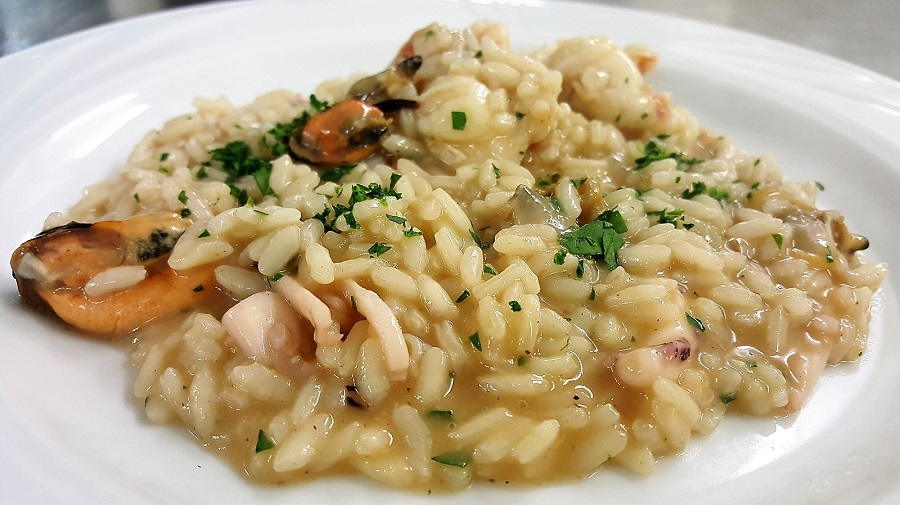

Seafood risotto

Intermediate Course:
Seafood risotto is an evergreen dish of Italian cuisine that makes everyone happy, from North to South.
Why? Simply because it is delicious, refined and easy to make!
Cleaning all the seafood is the most complicated part of this recipe, but as always, we talk you through it step by step! Seafood risotto is perfect if you are looking to serve a top class dish for friends and relatives.
A valid alternative to the Sicilian alternative with couscous or even paccheri pasta! Forkful after forkful, you'll feel the harmony of sea flavors and aromas mingle to create a truly amazing result.
Ingredients
- Carnaroli rice 1 cup (320 g)
- Clams 17 oz (500 g)
- Shrimps 10 oz (300 g) - (the tails)
- Garlic 2 cloves
- Vegetable broth to taste
- Butter ¼ stick (70 g) - cold
- Celery 1 oz (25 g)
- Peperoncino 1
- Black pepper to taste
- Mussels 2 lbs (1 kg)
- Calamari (squid) 12 oz (350 g) - already cleaned
- Parsley 1 sprig
- White wine 6 tbsp (90 g)
- Extra virgin olive oil to taste
- Fresh scallion 1 oz (50 g)
- Carrots 1 oz (25 g)
- Fine salt to taste
Steps
- Start by cleaning all the mollusks and crustaceans. Remember to discard any open or broken mussels and clams. Start with the mussels: remove the barnacles with a paring knife, followed by the byssus.
- Lastly, scrape away impurities with a steel scrub and rinse thoroughly.
- Leave the clams to soak in water with the salt for a couple of hours for, the time it takes to purge sand from them; drain and rinse.
- Remember to tap each clam against the cutting board or sink to check they are whole and not filled with sand.
- Empty the inside of the calamari and remove the skin.
- Cut into 0.4 inch strips, then into large pieces, each roughly 0.8 inches in size.
- Lastly, clean the shrimp tails: remove the legs and the shell, along with the black string on the back: simply make a small incision on the surface and remove with a knife blade or toothpick.
- Now that everything is ready, you can move over to the stove. Start by cooking the mussels: heat them in a large pan on a high flame.
- Put the lid on and leave them to open; shake the pan occasionally.(It takes around 2-3 minutes for them to open)
- Filter the liquid through a colander into a container.
- Wait a few moments before shelling them, to avoid burning yourself. Set aside 2-3 whole mussels for each plate, you'll need them for the final decorative touch.
- Now cook the clams. Put the pan back on the stove and add the clams. Cover with the lid and leave them to open, shaking the pan occasionally.
- The bivalves will open in 1-2 minutes; as soon as this happens, filter and add the liquid to the same container used for the mussel liquid.
- Leave to cool for a few moments before shelling and once more set aside 2-3 whole pieces per plate.
- Heat the vegetable broth, clean the celery, carrot and fresh spring onion. Finely chop the vegetables with a knife, peel the garlic cloves and leave them whole.
- Lastly, clean and then finely chop the peperoncino and the parsley. Leave to one side and return to the stove. Heat a saucepan on the stove, add a generous drizzle of oil, followed by the finely chopped garlic and parsley.
- Leave to flavor for ten minutes or so on a low flame, stirring occasionally. Once the vegetables have softened, remove the garlic, turn up the flame to the maximum setting and add the calamari.
- Saut? for 1 minute before adding the shrimp tails.
- Cook for another minute and as soon as the liquid evaporates, add 1.3 oz of white wine, simmer and reduce.
- Remove from the heat when the alcohol has fully evaporated and place the calamari and shrimps in a bowl; cover with the lid to keep them hot.
- Add the rice and toast for around 1 minute on the highest setting, stirring all the while to prevent any grains from burning.
- Once toasted, add the remaining part of the white wine (so 2 oz) and wait for the alcohol to evaporate before cooking the rice with the vegetable squash.
- You can add the squash gradually by the ladle, until fully cooked. Add the mussel and clam liquid and stir occasionally, but not too much.
- 1-2 minutes before the end of the cooking time, add the shrimps and calamari, the mussels and clams 32 and leave to flavor.
- Remove from the heat, add the very cold and diced butter and stir to obtain a creamy consistency
- Add the finely chopped parsley and the freshly ground pepper.
- Stir and leave to rest for a few minutes before placing on dishes.
- Your seafood risotto is ready: garnish the dishes with the mussels and clams to set aside for later.
Return to top
Return to Main Page